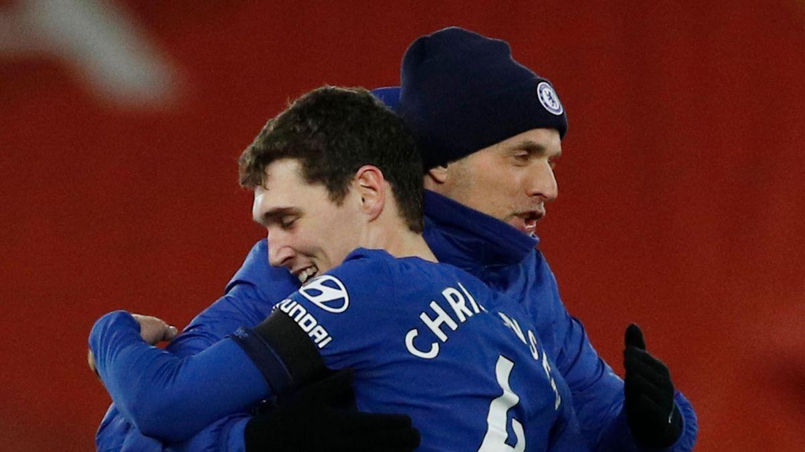

ANDREAS CHRISTENSEN
ANDREAS CHRISTENSENดาวเตะรายนี้มีความนิ่งทั้งตอนที่ครองบอลและไม่มีบอล เขามีร่างกายที่แข็งแกร่ง, เล่นลูกกลางอากาศได้ดี และตระหนักถึงความอันตรายที่จะเกิดขึ้น ทำให้กลายเป็นเซ็นเตอร์ที่มีความสามารถรอบด้าน แถมยังปรับไปเล่นเป็นฟูลแบ็คและมิดฟิลด์ตัวรับได้ด้วยเช่นกัน
อาการบาดเจ็บของธิอาโก้ ซิลวา ในช่วงกลางทางครึ่งแรกของเกมนัดที่ 3 ซึ่งทูเคิ่ลเข้ามารับงานที่บุกไปเยือนท็อตแน่ม ได้มอบโอกาสให้กับคริสเตนเซ่นได้ลงสนาม โดยเขาคว้าเอาไว้ทั้งสองมือ หลังจากจัดการเกมรุกของสเปอร์สอยู่หมัด คริสเตนเซ่นเป็นตัวจริง 11 จาก 13 เกมลีกหลังจากนั้น โดยเราเก็บคลีนชีตได้ถึง 9 ครั้ง เขาทำผลงานโดดเด่นในเกมกับแมนเชสเตอร์ ยูไนเต็ด ด้วยการจ่ายบอลสำเร็จทั้งหมด 77 ครั้ง ส่วนการแข่งขันที่แอนฟิลด์ เขาเคลียร์บอลไป 9 ครั้งซึ่งเป็นตัวเลขที่มากที่สุดในเกม
คริสเตนเซ่น ยังเล่นได้อย่างยอดเยี่ยมในเวทียุโรป โดยป้องกันความอันตรายของแอตเลติโก้ และปอร์โต้ในแมตช์เยือน เช่นเดียวกับจำกัดโอกาสของเรอัล มาดริดให้เหลือเพียงน้อยนิดในทั้ง 2 นัดของรอบรองชนะเลิศ กองหลังวัย 25 ปี มีความนิ่งในการครองบอล และอ่านเกมได้เฉียบขาด เขาได้รับเสียงชื่นชมมากมาย ดังนั้นจึงเป็นเรื่องที่น่าผิดหวังที่เขาได้รับอาการบาดเจ็บบริเวณเส้นเอ็น ในแมตช์ที่พวกเราบุกชนะแมนเชสเตอร์ ซิตี้ ซึ่งขณะนั้นการแข่งขันในฤดูกาลเหลืออยู่อีกไม่กี่สัปดาห์
แต่กลับมามีชื่อเป็นตัวสำรองในเกมลีกนัดสุดท้าย การปรากฎตัวครั้งแรกของเขาในยุคของทูเคิ่ล คริสเตนเซ่นได้ลงเล่นเป็นตัวสำรองแทนที่ธิอาโก้ ซิลวาที่ได้รับบาดเจ็บในครึ่งแรก เราได้ประตูออกนำไม่นานหลังจากนั้น และคริสเตนเซ่นก็ช่วยรักษาสกอร์นำในครึ่งหลัง แม้เขาจะลงสนามเป็นตัวสำรอง แต่ไม่มีนักเตะเชลซีคนใดที่ดักบอลได้มากกว่าอันเดรียส และมีเพียงแค่รีซ เจมส์ ที่เคลียร์บอลได้มากกว่าเขาที่ทำไป 4 ครั้ง เขากลายเป็นผู้เล่นคนแรกที่คว้าแชมป์ยูฟ่า ยูธ ลีก, ยูโรป้า ลีก และแชมเปี้ยนส์ ลีก
คริสเตนเซ่น ลงเป็นตัวจริงให้เดนมาร์กทุกนัดในฟุตบอลโลก 2018 ผ่านเข้ารอบ 16 ทีมสุดท้ายก่อนจะพ่ายจุดโทษในเกมเจอโครเอเชีย เขาสามารถเล่นได้ทั้งตำแหน่งมิดฟิลด์ตัวรับ และกองหลังตัวกลางด้วย
เขากลับมาเล่นตำแหน่งกองหลังหลังจากการแข่งขันฟุตบอลโลก โดยจับคู่กับไซม่อน เคียร์ได้อย่างแข็งแกร่ง จนเป็นกำลังสำคัญช่วยทีมผ่านไปเล่นยูโร 2020 รอบสุดท้าย และทำผลงานได้น่าประทับใจในทัวร์นาเม้นต์ดังกล่าวด้วย คริสเตนเซ่น ออกสตาร์ตทุกนัดให้กับ "โคนม" ในศึกยูโร และเป็นหนึ่งในนักเตะทีมชาติเดนมาร์กที่ต้องตกใจกับการล้มกลางสนามของคริสเตียน อีริคเซ่นในนัดแรก อย่างไรก็ตาม เขาและเพื่อน ๆ ทะลุจากรอบแบ่งกลุ่ม ก่อนค่อย ๆ ผ่านรอบน็อคเอาต์จนไปถึงรอบรองชนะเลิศ โดยตัวอันเดรียส ยิงหนึ่งในประตูที่สวยที่สุดของรายการนี้ด้วยการซัดไกลในเกมที่ถล่มรัสเซียไป 4-1
SOCIAL MEDIA
 |
|